Let be paths with the same endpoints,
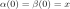
and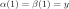
. A path homotopy from to
to  is a continuous
is a continuous
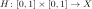
with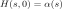
,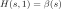
,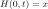
and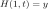
for all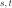
. One writes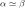
.
Path homotopy is an equivalence relation on the set of paths from  to
to  . The class of is written
. The class of is written
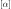
.Reflexivity:
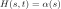
. Symmetry: replace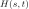
by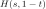
. Transitivity: given from to and
from to and
 from to
from to  , set
, set 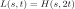
for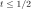
and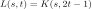
for ; the two definitions agree on the closed set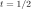
, both giving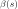
, so is continuous by the pasting lemma and is a path
homotopy from to .
is continuous by the pasting lemma and is a path
homotopy from to .
For paths from to and from to
 , the concatenation
, the concatenation
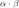
is the path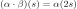
for and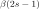
for ; the reverse is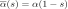
, and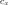
denotes the constant path at.
Let be a path and
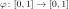
continuous with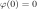
and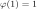
. Then . Moreover, if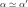
and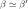
with matching endpoints, then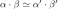
.For the first claim put
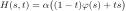
. It is continuous as a composition, equals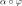
at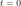
and at 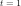
, and at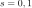
the argument is constantly , respectively
, respectively  , because
, because  fixes both.
fixes both.
For the second, let
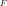
and be path homotopies and set
be path homotopies and set
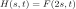
for , for . At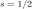
both give the common endpoint, so is
continuous by the pasting lemma; it restricts to
 and
and 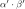
at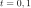
and is constant at .Let
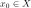
. The set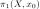
of path-homotopy classes of loops at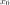
is a group under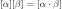
, with identity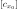
and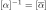
.The product is well defined by the second part of the lemma.
Associativity. A direct check gives
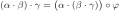
for the piecewise-linear taking 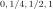
to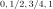
; since is continuous and fixes the
endpoints, the reparametrisation lemma makes the two sides homotopic.
Identity.
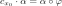
with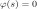
for and for , again continuous and fixing the endpoints; so , and symmetrically .
Inverses. Define for and
for . Both formulas give
at , so is continuous; at  it
is , at it is constantly
, and at it is . Hence
, and the same argument
applied to gives the other side.
it
is , at it is constantly
, and at it is . Hence
, and the same argument
applied to gives the other side.
If is a path from to , then
is an
isomorphism . So in a
path-connected space the fundamental group does not depend on the
basepoint, up to isomorphism.
The map is well defined by the lemma and is a homomorphism, since using and the group laws just proved. The map induced by is a two-sided inverse for the same reason.
A continuous  with induces a
homomorphism
,
; moreover
and .
with induces a
homomorphism
,
; moreover
and .
If is a path homotopy from to , then
is one from to , so
is well defined; and
directly from the definition of concatenation, so is a
homomorphism. The two functoriality identities hold before passing to
classes.
A homeomorphism induces an isomorphism
. Two path-connected
spaces with non-isomorphic fundamental groups are not homeomorphic.
Functoriality applied to and gives and , so is an isomorphism of groups. The second statement is its contrapositive, the basepoint being immaterial by the change-of-basepoint proposition.
The group is defined for every space and computed for almost none of
them by this construction alone: even  of the circle requires
a covering-space argument. What the corollary gives immediately is the
form of every later application – an invariant that is a group, so that
two spaces can be told apart by an algebraic computation rather than a
geometric one.
of the circle requires
a covering-space argument. What the corollary gives immediately is the
form of every later application – an invariant that is a group, so that
two spaces can be told apart by an algebraic computation rather than a
geometric one.